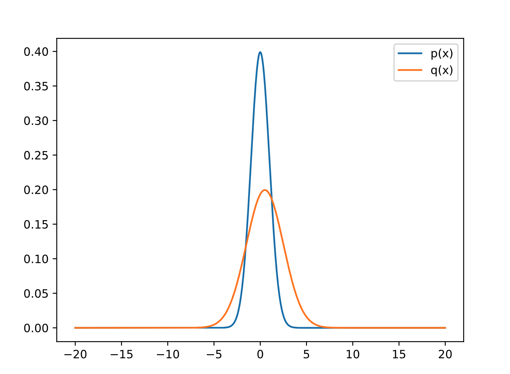

最近在看《Guided policy search》这篇文章，其中，用到了Importance Sampling，KL divergence等技术，虽然这些之前都用过，但是没有系统的整理过一些文档出来，《Guided policy search》这篇文章是13年的，但是TRPO和PPO等一些算法用到的技术，在这篇文章里基本都有用到了。初步感觉这篇文章还是比较经典的。
这篇文章里举的例子都是以强化学习的连续动作空间中的policy来举例的。
产生两个策略用于验证：
因为我的研究方向是强化学习，所以举的例子用的也是强化学习中的连续空间的Policy来说明。以PPO算法为例，一般来说，当使用Actor-Critic网络的结构时，actor的输入是State，输出是action对应维度的正态分布的均值\(\mu\)。然后根据这个均值和计算出来的方差，可以计算出对应的分布。使用Pytorch来实现。
1 | import numpy as np |
函数参考：
- Pytorch MultivariateNormal:https://pytorch.org/docs/stable/distributions.html
Creates a multivariate normal (also called Gaussian) distribution parameterized by a mean vector and a covariance matrix.

Importance Sampling原理
考虑这样一个情况，你想要计算一个函数\(f(x)\)在某个分布\(x \sim p(x)\)下的期望，根据连续概率密度函数的期望公式，可以得到：
\[E[f(x)] = \int f(x)p(x)dx \approx \frac{1}{n} \Sigma_if(x_i)\]
如果用Monte Carlo方法来计算这个期望的话，相当于对这个分布进行不断采样(对\(x\))，然后根据期望公式计算相应的期望。但是，当\(p(x)\)是一个比较难以采样的分布（有没有具体的例子来描述一下，到底在什么情况会出现难以采样的分布？什么样子的分布是难以采样的分布？）如何通过一些已知的和一些简单的分布的采样来估计出这个难以采样的分布对应的期望。
对应的解决方法就是Importance Sampling技术，该技术“Importance Sampling has been successfully used to accelerate stochastic optimization in many convex problems.《Biased Importance Sampling for Deep Neural Network Training》”。
\[E[f(x)]=\int f(x) p(x) d x=\int f(x) \frac{p(x)}{q(x)} q(x) d x \approx \frac{1}{n} \sum_{i} f\left(x_{i}\right) \frac{p\left(x_{i}\right)}{q\left(x_{i}\right)}\]
\(x\)是从分布\(q(x)\)采样得到的，\(\frac{p(x)}{q(x)}\)被称为sampling ratio或者是sampling weight。其作用是"a correction weight to offset the probability sampling from a different distribution"。
这篇知乎https://zhuanlan.zhihu.com/p/41217212给出了一个重要性采样的Demo，是用来求曲线的面积为例子，对于难以直接求解析解的曲线的积分，无法直接求出其积分，往往采用估计的方式，即在被积区间中进行采样，利用微积分的分段，求和，取极限的思想来近似逼近曲线的积分或者说面积。
如果采样是均匀的，可以得到一种估计，但是，这种估计方式会随着采样数的增大而越来越精确，另一方面：当采样数量是一定的时候，有没有什么办法来提高积分计算的准确度，减少计算的方差。这篇知乎中给出的这个例子很有趣。很明显，在概率密度函数大的地方，其函数值对积分的影响作用也大，这时候，在该区域加大采样的数量，可以相应的提高计算的准确度。
Importance Sampling实现
在使用off-policy算法时，主要有两个策略（不考虑TD3这种），一个是Behavior policy，另一个是Target Policy
- Behavior policy：更新次数快，用于产生学习过程中所需要的episode
- Target policy：更新过程慢，通常在behavior policy更新到一定程度后，再将behavior policy的参数传输到Target policy
或者换句话说其实有两个behavior policy，只不过一个更新慢，一个更新快，当然当迭代到一定次数后，其理想状态都是收敛到最优值。使用Importance Sampling的技术可以通过Behavior policy去估计Target policy的期望的Return。
1 | def fx(x): |
1 | Simulation Value tensor([0.9414]) |
Question：RL（例如PPO）中IS是怎么使用的fx定义的是什么？
Answer：fx定义的是Advantage，最终目标函数求的是Advantage的均值，最大化其均值。
可以参考：https://zhuanlan.zhihu.com/p/388707220
KL divergence原理
信息量化的准则：
- 非常可能发生的事件信息量要比较少，并且极端情况下，确保能够发生的事件应该没有信息量。
- 较不可能发生的事件具有更高的信息量。
- 独立事件应具有增量的信息。例如，投掷的硬币两次正面朝上传递的信息量，应该是投掷一次硬币正面朝上的信息量的两倍。
一个事件\(X=x\)的自信息：
\(I(x)=-logP(x)\)
\(log\)自然对数，底数为\(e\)，直观上看，当该事件发生的概率越大，则越习以为常，也就是说上述定义的自信息的数值就越小。
熵(Entropy)的定义
在信息论中是对信息量的度量，在物理学与热力学中是对混乱度的度量。
香农熵给出了事件所属的整个分布欧的不确定性总量量化：
\(H(x)=E_{x \sim p}[I(x)]=-E_{x \sim p}[logP(x)]=-\Sigma_xP(x)logP(x)\)
相对熵（KL散度）
对于一个随机变量\(x\)，有两个分布\(P(x)\)和\(Q(x)\)，可以使用KL散度来度量两个分布之间的差异，需要注意的是，这里是\(Q\)相对于\(P\)的分布：
\(D_{KL}(P||Q) = E_{x \sim P}[log \frac{P(x)}{Q(x)}] = E_{x \sim P}[logP(x)-logQ(x)] = \Sigma_x P(x) \times (logP(x)-logQ(x))\)
KL divergence实现
1 | px = MultivariateNormal(torch.tensor([5.0], dtype=torch.float32), torch.tensor([[1.0]], dtype=torch.float32)) |
1 | tensor(4.5000) |
参考资料：https://pytorch.org/docs/stable/distributions.html
TORCH.DISTRIBUTIONS：这个模块参考的是TensorFlow Distribution包，主要有两种方法来进行反向传播（直接对随机样本进行反向传播是不可行的，所以具体来说，TRPO和PPO算法论文中提到的两种替代函数的计算方法）：一个是Score function，还有一个是Pathwise derivative。
- Score function：
- Pathwise derivative：
torch.distributions.kl.kl_divergence(p, q)
验证：对于单维的高斯分布，其KL散度的推导可以参考：https://zhuanlan.zhihu.com/p/22464760，其最终表达式为：
\(\int p_{1}(x) \log \frac{p_{1}(x)}{p_{2}(x)} d x=\log \frac{\sigma_{2}}{\sigma_{1}}+\frac{\sigma_{1}^{2}+\left(\mu_{1}-\mu_{2}\right)^{2}}{2 \sigma_{2}^{2}}-\frac{1}{2}\)
对上述方针结果的分析可以发现，两者的结果一样，但是torch.distributions.kl.kl_divergence的源码及其计算的原理后续还需要写一篇文章继续深入分析一下。
参考文献：
https://zhuanlan.zhihu.com/p/143105854
https://zhuanlan.zhihu.com/p/150693309